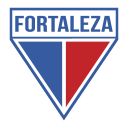
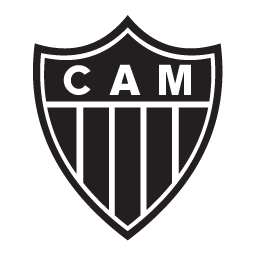

Times Brasileirao Serie A
Times Serie A
1º Botafogo
2º Palmeiras
3º Grêmio
4º Flamengo
5º Fluminense
6º Bragantino
7º Athletico PR
8º Fortaleza
9º Atlético-MG
10º Cuiabá-MT
11º São Paulo
12º Cruzeiro
13º Corinthians
14º Internacional
15º Goiás
16º Bahia
Times Rebaixados
17º Santos
18º Vasco da Gama
19º Coritiba
20º América-MG
Historia Dos Times da Serie A
Botafogo
O Club de Regatas Botafogo foi fundado em 1894 em Botafogo, no Rio de Janeiro, sendo renomado pelo sucesso no remo e tornando-se o único clube brasileiro campeão em três séculos. Em 1904, nasceu o Botafogo Football Club, que destacou-se no futebol, formando jogadores para a seleção nacional. Em 1942, os dois clubes se uniram, criando o Botafogo de Futebol e Regatas, com a famosa estrela solitária na bandeira. O clube teve sucessos no futebol e remo, superando desafios como a queda em 2002 e o retorno à elite em 2003. Sua trajetória é marcada por títulos estaduais, regionais e nacionais, consolidando-se como um dos clubes mais respeitados do Brasil.

Palmeiras
O Palmeiras surgiu no dia 26 de agosto de 1914. Fundado por imigrantes italianos, seu primeiro nome foi Società Sportiva Palestra Italia. Em 1942, quando estava estabelecida como uma força do futebol paulista, a equipe foi obrigada a trocar de nome, passando a se chamar Sociedade Esportiva Palmeiras em decorrência da Segunda Guerra Mundial. O Palmeiras foi campeão paulista logo em sua primeira partida com o novo nome. Foram, ao todo, 22 títulos estaduais. Um dos times mais famosos da história do clube alviverde foi o chamado de "Academia de Futebol", das décadas de 1960 e 70, liderado por Ademir da Guia - um dos poucos elencos que faziam frente ao Santos de Pelé

Grêmio
O Grêmio Foot-Ball Porto Alegrense foi fundado em 15 de setembro de 1903, em um restaurante da região central de Porto Alegre. A equipe venceu o primeiro campeonato que disputou, a Taça Wanderpreiss, em 1905 - que voltaria a ganhar em outras sete oportunidades. O Grêmio é, junto ao Cruzeiro, o maior campeão da história da Copa do Brasil (quatro taças). O ano de 1983 foi um dos mais marcantes da história da equipe, com as conquistas da Copa Libertadores e do Mundial, com o então atacante Renato Gaúcho tendo marcado os gols da vitória diante do Hamburgo, da Alemanha. Em 2005, no título da Série B, o time teve jogo histórico contra o Náutico, a "Batalha dos Aflitos".

Flamengo
O Flamengo foi fundado em 17 de novembro de 1895 para as disputas de remo. A entrada da equipe no futebol aconteceu em 1912. Atualmente, o time rubro-negro é o maior vencedor da história do Campeonato Carioca, com 31 títulos. Segundo diversas pesquisas, é o clube com o maior número de torcedores do País. Os dois principais títulos da história do Flamengo ocorreram em 1981. Comandado pelo ídolo Zico, o time conquistou a Copa Libertadores da América, em final contra o Cobreloa, do Chile, e o Mundial Interclubes, diante do Liverpool, da Inglaterra. Foi na década de 1980, também, que o Flamengo conquistou o seu primeiro Campeonato Brasileiro.

Fluminense
O Fluminense Football Club foi fundado em 1902 por Oscar Cox e inicialmente usava as cores cinza e branco, mudando para verde, branco e grená em 1904. O clube é conhecido por ser pioneiro na construção do primeiro estádio de cimento da América Latina, o Estádio de Laranjeiras, que sediou eventos importantes. O Fluminense detém a Taça Olímpica e é o único clube de futebol do mundo com seu nome no Prêmio Nobel do Esporte do Comitê Olímpico Internacional. O clube teve muitos craques em sua história e conquistou quatro vezes o Campeonato Brasileiro, a Copa do Brasil e a Copa da Primeira Liga, além de 33 títulos estaduais. Possui dois Centros de Treinamento: um em Xerém para as divisões de base e outro na Barra da Tijuca para o futebol profissional.

Bragantino
O Bragantino é uma equipe de futebol do interior de São Paulo fundada em 1928. Ao longo de sua história, teve altos e baixos, incluindo uma fase áurea nos anos 1990, quando conquistou o título do Campeonato Paulista e chegou à final do Campeonato Brasileiro. No entanto, nos anos mais recentes, enfrentou rebaixamentos e dificuldades em competições estaduais e nacionais. Em 2015, foi rebaixado para a Série A2 do Campeonato Paulista.

Athletico PR
O Clube Atlético Paranaense surgiu da união de duas agremiações: o International e o América. A fusão foi concluída em 26 de março de 1924. O primeiro título da equipe já veio no ano seguinte: o Paranaense de 1925. Foi o primeiro de 21 troféus estaduais do Atlético - mais um Supercampeonato, em 2002. O principal título da história do clube foi o Campeonato Brasileiro de 2001, conquistado diante do São Caetano, com boas atuações do atacante Alex Mineiro. O time rubro-negro tem uma das melhores estruturas de trabalho do País, com o Estádio Arena da Baixada e o CT do Caju, e é o único clube do Estado a ter alcançado uma final de Copa Libertadores, em 2005.

Fortaleza
O Fortaleza Esporte Clube foi fundado em 1918, com Alcides de Castro Santos como um de seus fundadores. Alcides foi um destacado desportista cearense e também fundou outros clubes na região. Ele teve uma influência significativa nos primeiros 20 anos do clube e era um comerciante de sucesso. Além disso, trouxe o primeiro atleta de fora do estado para jogar em Fortaleza. O Fortaleza Esporte Clube teve outros fundadores notáveis, como Oscar Loureiro e Walter Barroso.

Atlético-MG
O Atlético-MG foi fundado em 25 de março de 1908, por 22 jovens que se reuniram no Parque Municipal, em Belo Horizonte. O time foi o vencedor da primeira edição do Campeonato Brasileiro, em 1971 - seu único título na competição. Também foi vice-campeão nacional em 1977 (invicto), 80 e 99. O Atlético conquistou ainda a primeira edição do Campeonato Mineiro, que era chamado de Campeonato da Cidade à época. A equipe alvinegra é a maior campeã do Estadual de MG, com 40 taças - 19 na versão antiga e 21 na atual. O principal ídolo alvinegro é o atacante Reinaldo, que atuou por 12 anos no clube e é omaior artilheiro, com 255 gols.

Cuiabá-MT
O Cuiabá Esporte Clube, sediado em Mato Grosso, foi fundado em 2001 por Gaúcho, um ex-jogador. Começou em campeonatos de base e conquistou o título estadual em seu primeiro ano no futebol profissional, em 2003. Após alguns altos e baixos, incluindo um licenciamento temporário, retornou em 2009 sob nova liderança. A equipe subiu para a Série C do Brasileirão em 2012 e venceu o campeonato estadual em várias ocasiões. Em 2015, conquistou a Copa Verde, classificando-se para a Copa Sul-Americana. Em 2020, alcançou o acesso à Série A do Brasileirão, marcando o retorno de um clube de Mato Grosso à elite após mais de 35 anos. Em 2021, o Cuiabá conquistou o título estadual novamente e manteve-se na Série A do Brasileirão, além de garantir uma vaga na Copa Sul-Americana de 2022.

São Paulo
O São Paulo Futebol Clube foi fundado em 1930 pela fusão da Associação Atlética das Palmeiras e parte do Club Athletico Paulistano. O clube começou com faixas vermelhas e pretas e herdou o campo da Associação Atlética das Palmeiras, sendo conhecido como São Paulo da Floresta. Venceu o Campeonato Paulista em 1931 e foi vice-campeão em outras ocasiões. Após uma fusão e um período sem futebol, o clube ressurgiu em 1935. Em 1942, contratou Leônidas da Silva e conquistou seu segundo título paulista em 1943. Construiu o Estádio do Morumbi em 1953. Passou por um período de conquistas limitadas até os anos 1970, quando venceu Paulistas, um Campeonato Brasileiro e a Libertadores em 1992 e 1993. Alcançou sucesso no início dos anos 2000, com conquistas de Libertadores e Mundial em 2005, seguidas por títulos brasileiros. Após um período de seca, venceu a Copa Sul-Americana em 2012 e o Campeonato Paulista em 2021.

Cruzeiro
O Cruzeiro Esporte Clube, fundado em 1921 como Palestra Itália, é um renomado clube de futebol brasileiro. Em 1942, mudou seu nome para Cruzeiro e cores para azul e branco devido à Segunda Guerra. Possui um rico histórico de títulos, incluindo 2 Copas Libertadores e 4 Brasileirões. Em 2021, tornou-se a primeira SAF do Brasil após ser adquirido por Ronaldo Fenômeno. Em 2023, Pedro Lourenço adquiriu 20% da SAF, mantendo 10% do conselho, enquanto Ronaldo possui 70%.

Corinthians
O Sport Club Corinthians Paulista foi fundado em 1º de setembro de 1910, em São Paulo, por um grupo de operários do bairro do Bom Retiro. Inspirados por uma visita do Corinthian Football Club inglês, escolheram o nome "Corinthians". O primeiro jogo ocorreu em 10 de setembro de 1910, resultando em derrota por 1x0 para o União da Lapa. O clube inicialmente disputava partidas na Várzea. Em 1914, conquistaram seu primeiro título na Liga Paulista de Futebol, com uma campanha perfeita. O Corinthians cresceu ao longo dos anos e em 2012 obteve sucesso notável, vencendo a Libertadores e o Mundial de Clubes.

Internacional
O Sport Club Internacional surgiu como uma opção para os não-germânicos poderem disputar futebol em Porto Alegre. Foi fundado em 4 de abril de 1909, pelos irmãos José, Henrique Poppe Leão e Luiz Madeira Poppe. O nome Internacional, uma homenagem ao homônimo paulista, indicava a abertura da agremiação a pessoas de todas as origens. A primeira taça veio em 1913, no Campeonato Metropolitano de Porto Alegre. Desde então, a equipe colorada ganhou diversos títulos. Entre eles, o Mundial, duas Copas Libertadores, a Recopa e a Copa Sul-Americana - conquistadas na década de 2000 - e três Campeonatos Brasileiros - na década de 1970, com time liderado por Falcão.

Goiás
O Goiás Esporte Clube foi fundado em 1943, em Goiânia, a partir de um sonho de amigos que se reuniram sob um poste de iluminação pública na rua 23. Após dificuldades iniciais, o clube conquistou seu primeiro título estadual em 1966 e se tornou o maior vencedor de Goiás e da região Centro-Oeste, com 26 títulos estaduais. Na década de 1970, o Goiás entrou no Campeonato Brasileiro. Nos anos 1980, construiu uma infraestrutura de treinamento de alta qualidade. Os anos 1990 foram marcados por mais títulos estaduais, o primeiro título nacional (Brasileiro da série B em 1999) e a inauguração do Estádio Hailé Pinheiro. A década de 2000 viu mais sucessos estaduais e uma participação na Taça Libertadores da América em 2006. Em 2010, o clube chegou à final da Copa Sul-Americana. Até hoje, o Goiás continua sua trajetória de sucesso.

Bahia
O Esporte Clube Bahia foi fundado em 1º de janeiro de 1931, em Salvador, Bahia, por um grupo de ex-jogadores de outros clubes que estavam sem poder praticar o esporte que amavam. A equipe definiu suas cores e slogan ("Nascido para vencer") em uma reunião no início de janeiro, e o médico Waldemar Costa tornou-se o primeiro presidente. O primeiro jogo ocorreu em 1º de março de 1931, com uma vitória por 2 a 0 sobre o Ypiranga. O Bahia conquistou seu primeiro título, o Torneio Início, no mesmo dia, e em outubro do mesmo ano, tornou-se campeão estadual invicto.